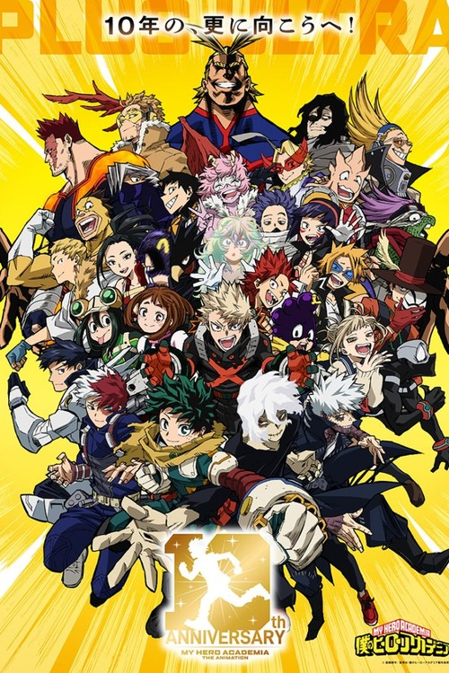

Todos os animes
Encontre uma série e continue sua jornada.

CLÁSSICO
Naruto
220 episódios • 22 XP por episódio

PLUS ULTRA
My Hero Academia
9 etapas • 171 episódios • 22 XP por episódio
Nenhum anime encontrado.
Encontre uma série e continue sua jornada.
220 episódios • 22 XP por episódio

9 etapas • 171 episódios • 22 XP por episódio
Nenhum anime encontrado.
Entre para salvar episódios e ganhar XP.